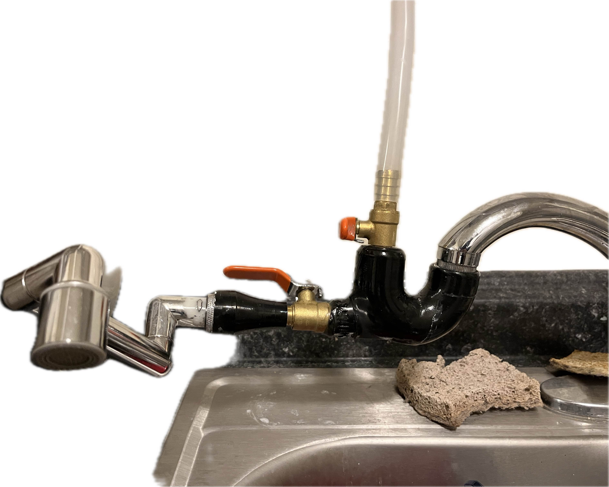

Spread Out, 2016-Present
Wiring | CAD | 3D Printing | Coating | Assembly
SOFTWARES AND MACHINES USED:
Dremel 3D20 – 3D Printed Magazines
Roto-tool – Sanding and precision cuts
Bandsaw
Drill
MAIN MATERIALS USED:
LiPo 7.4v Battery
130-Type Motors
Micro Switch
March 2024
Wiring | Buck/Boost Converters
Just a Lego Pikachu. Sort of.
Your browser does not support the video tag.
MACHINES USED:
Dremel 3D20 – 3D Printed Magazines,
Roto-tool – Sanding and precision cuts,
Bandsaw,
Drill
MAIN MATERIALS USED:
Upgraded Spring,
Brass Barrel (17/32 inch),
Silicone Grease,
PVC Pipe – Stock Extender
3D printed fittings redirect water directly into the potable filter tank. Challenge? in a rented apartment so no holes in the wall could be made to feed off of main water source :(

SOFTWARES AND MACHINES USED:
AutoCAD - Design
Bandsaw
Panel Saw
Jigsaw
Blowtorch (Wood Treating)
MAIN MATERIALS USED:
Luan, Plywood, Stick Goods, Wood Stain, RGB Lights
March, 2020
Wiring | CAD | 3D Printing | Coating | Assembly
SOFTWARES and Machines USED:
Solidworks – Design (Battery Holder), Dremel 3D20 – 3D Printing
MAIN MATERIALS USED:
Voltage Step-Up Module, Wiring and soldering
SOFTWARES:
Autodesk Maya – Vehicle and Set Modeling,
VRay 5 - Rendering
MAIN MATERIALS USED:
Textures – VRay Materials with custom texture maps, MASH Fluids – For the Wave Simulations